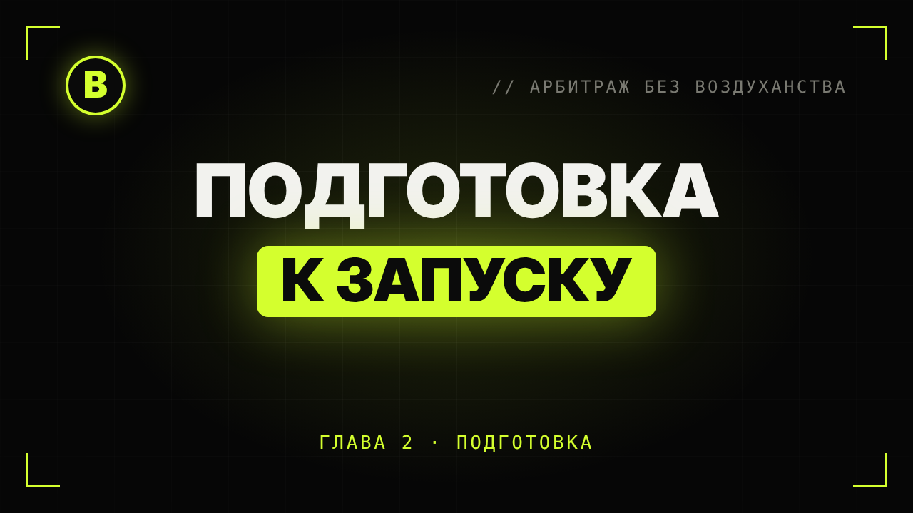
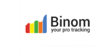
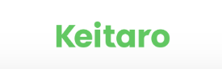
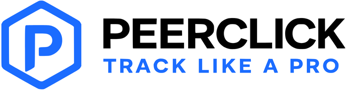
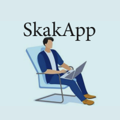
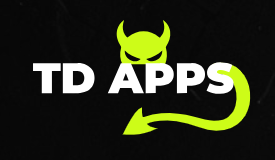
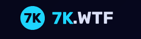

Подготовка

Партнёрка
Здесь всё индивидуально. Конкретные партнёрки я советовать не буду: это не реклама, и я не хочу никого подставлять, если у вас с партнёркой что-то пойдёт не так.
Как найти партнёрку быстро: зайди в любой арбитражный чат и напиши, что тебе нужна партнёрка и ты хочешь лить трафик на нужное ГЕО. В моём случае это Бельгия. Дальше:
- выбирай там, где цена больше;
- изучи историю партнёрки: как она себя ведёт и что о ней пишут;
- почитай отзывы.
Выбирай партнёрку без постбэка, где данные приходят сразу. Бывают такие, где постбэк приходит раз в 40 минут, и ты теряешь контроль над результатом.
Трекер
Трекер нужен, чтобы отслеживать конверсии в ту же секунду: произошла покупка, депозит или любое другое действие, и ты сразу видишь отклик. Он нужен, чтобы:
- быстро видеть свои результаты в моменте;
- следить за своим EPC (доходом на клик).
Трекеров много: Peerclick, Binom, Keitaro и другие. Я советую Binom.



Что такое EPC
EPC (earnings per click) — сколько ты зарабатываешь в среднем на один клик. Считается как доход, делённый на число кликов.
Приложение
Я советую брать SkakApp. Это давний сервис для создания приложений на рынке арбитража. У него хорошие конверсии, нет потерь трафика, пуши долетают хорошо.
Есть и другие: TD Apps, 7K и много других. Но SkakApp сейчас лучшее, что есть на рынке.



Обязательно подготовь пуши. Можно спросить у партнёрки, есть ли пуши и креативы, которые заходили в последнее время.
Аккаунты и расходники
Опять же индивидуально:
- Маленький бюджет. Покупай фармы и привязывай карты.
- Не хочешь рисковать своими деньгами. Лучше найди агента. Он берёт процент со спенда, нормально до 4–5%.
Агентов нужно перебирать, это тоже своего рода тест. Многие выдают плохие, неспендовые кабинеты.
Бюджет на старте
Если ты соло, бери ГЕО тир 3: оно дешевле и требует меньше затрат.
Если брать Бельгию, то на тест нужно как минимум $5000.
Глубже: почему так много
Это моя прикидка по цифрам из главы 1: клик стоит около $5 при депозите $250. Чтобы получить хоть какую-то статистику и несколько депозитов, нужно прогнать много кликов, поэтому меньшая сумма даже не даст понять, работает связка или нет.
Рабочее место и команда
Сейчас на рынке требуется много спенда, хорошее качество, сильный ретен-отдел и пуш-отдел. Поэтому лучше идти в команду, причём в сильную. Это даст большой рост, если ты пока ничего не понимаешь.
Лить соло уже давно ушло на второй план. Я знаю лишь пару человек, которые льют соло и на этом зарабатывают.
Новые главы выходят в канале. Подпишись, чтобы не пропустить.
Подписаться на «Воздухан»